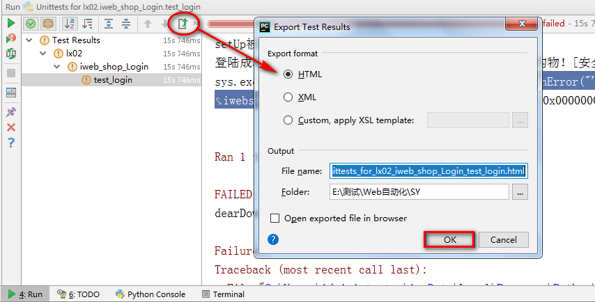

测试结果-HTML测试报告
目标
1. 掌握如何生成HTML测试报告方法
1. 什么是HTML测试报告
说明：HTML测试报告就是执行完测试用例后以HTML(网页)方式将执行结果生成报告
1.1 为什么要生成测试报告
1. 测试报告是本次测试目的最终体现形态
2. 测试报告内包含了有关本次测试用例的详情
2. HTML生成报告方式
1. Export Test Results （UnitTest 自带）
2. HTMLTestRunner（第三方模板）【重点】
2.1 Export Test Results （自带）

自带报告生成操作图

提示：适合单条用例执行时使用
2.2 HTMLTestRunner【重点】

1.1 测试报告 生成步骤分析
1. 复制HTMLTestRunner.py文件到项目文件夹
2. 导入HTMLTestRunner、UnitTest包
3. discover加载要执行的用例
(discover=unittest.defaultTestLoader.discover(test_dir,pattern="test*.py"))
4. 设置报告生成路径和文件名
(file_name=file_dir+nowtime+"Report.html")
5. 打开报告 with open(file_name,'wb') as f:
6. 实例化HTMLTestRunner对象：runner=HTMLTestRunner(stream=f,[title],[description])
参数说明：
(stream：文件流，打开写入报告的名称及写入编码格式)
(
[]，为可选；
title为报告标题，如XXX自动化测试报告
description：为说明；比如操作系统、浏览器等版本
)
7. 执行：runner.run(discover)
1.2 实现代码
import time
from CodeEdit.LX04.Tools.HTMLTestRunner import HTMLTestRunner
import unittest
# 加载当前目录
test_dir='.'
# 加载当前目录下iweb开头的.py文件
discover=unittest.defaultTestLoader.discover(test_dir,pattern="test*.py")
if __name__ == '__main__':
# 定义报告目录
file_dir="../Report/"
# 定义报告名称格式
nowtime=time.strftime("%Y-%m-%d %H_%M_%S")
# 报告完整路径和名称
file_name=file_dir+nowtime+"Report.html"
with open(file_name,"wb")as f:
# 实例化HTMLTestRunenr对象，传入报告文件流f
runner=HTMLTestRunner(stream=f,title="iweb_shop项目Web自动化测试报告",description="测试用例共计2条")
runner.run(discover)
1.3 总结
1. HTMLTestRunner作用
2. 使用HTMLTestRunner生成报告操作步骤